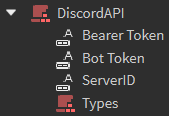

Discord API
This module helps you to communicate with discord easier. It can read member info, channel info and guild info. You need to know your server ID and your bot's token. In the module you'll find three string values: Server ID, Bearer Token and Bot Token. Server ID must be filled, and then you can fill either Bearer or Bot Token.

You can download the module
here.
Module Version: v1.0.0-a
Requiring the module
local Discord = require(Path_to_module)
Base Functions
:GetMembersList(Limit: number)
This function returns a table of all server members.
local Discord = require(Path_to_module)
local Members = Discord:GetMembersList(3)
print(Members) --> {[1] = {. . .}, [2] = {. . .}, . . .}
YIELDS:GetMember(Username: string, Limit: number)
This function allows you to search for a discord user using either their nickname or their global name.
local Discord = require(Path_to_module)
local Member = Discord:GetMember("username", 1)
print(Member) --> {[1] = {. . .}}
:GetRoles()
This functions returns a table with roles their IDs and other information.
local Discord = require(Path_to_module)
local Roles = Discord:GetRoles()
print(Roles) --> {[1] = {. . .}, [2] = {. . .}, . . .}
:GetChannelList()
This function returns all channels in a server in table form.
local Discord = require(Path_to_module)
local Channels = Discord:GetChannelList()
print(Channels) --> {[1] = {. . .}, . . ., [50] = {. . .}}
:GetChannel(ChannelID: string)
This function returns the data of the channel.
local Discord = require(Path_to_module)
local Channel = Discord:GetChannel("123456789")
print(Channel) --> {. . .}
:SendMessage(ChannelID: string, Message: string)
This function returns three values: boolean, errorMessage (if any) and MessageData such as its ID.
local Discord = require(Path_to_module)
local success, err, data = Discord:SendMessage("123456789", "This is just a message.")
if not success then warn(err) end
print(data) --> {id = ". . .", type = . . ., content: "This is just a message.", . . .}
:EditMessage(ChannelID: string, MessageID: string, Data: {content: string, embeds: {. . .}})
This function will edit the message and will return three values, boolean, errorMessage (if any) and MessageData.
local Discord = require(Path_to_module)
local success, err, data = Discord:EditMessage("123456789", "987654321", {content = "A new message!", embeds = nil})
if not success then warn(err) end
print(data) --> {. . .}
:DeleteMessage(ChannelID: string, MessageID: string)
This function will delete the message by its ID. It returns only two values: boolean and string.
local Discord = require(Path_to_module)
local success, err = Discord:DeleteMessage("123456789", "987654321")
if not success then warn(err) end
YIELDS:GetMessages(ChannelID: string, Options: {around: snowflake, before: snowflake, after: snowflake, limit: number})
This function will get all messages in a channel depending on the 4 options.
local Discord = require(Path_to_module)
local Messages = Discord:GetMessages("123456789", {after = DateTime.fromLocalTime(2021, 11, 13, 0, 0, 0, 0000), limit = 10})
print(Messages) --> {[1] = {. . .}, . . ., [10] = {. . .}}